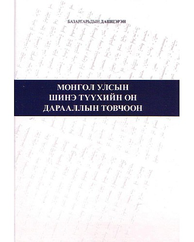

|  |
ДүгнэлтЭх орны түүхийг судлахад түүхийн чухал явдлуудын он дарааллыг нэгэн мөр болгон, үнэн зөвөөр журамлах нь түүхийн дэс дарааллыг нарийн чанд тогтооход чухал ач холбогдолтой юм. Гэтэл үүнийг түүхийн кабинет одоо хүртэл тун бага анхаарч иржээ. н.Сэр-Оджав одоогоос нэлээд хэдэн жилийн өмнө, Монголын түүхийн он дараалсан товч (бүгд 243 явдал бүхий) лавлах бичгийг 1900-1947 онуудыг хамран зохиожээ. Тэр нь анхны оролдлого байсан тул гол чухал явдлуудыг ихэвчлэн хамарч чадаагүй ба болсон явдлыг зөвхөн гарчиглап бичсэнээс биш утга учрыг тайлбарлаагүйн дээр ямар материалаас иш татаж авсандаа зүүлт хийж заагаагүй гол дутагдалтай болжээ. |
|---|
Гарах